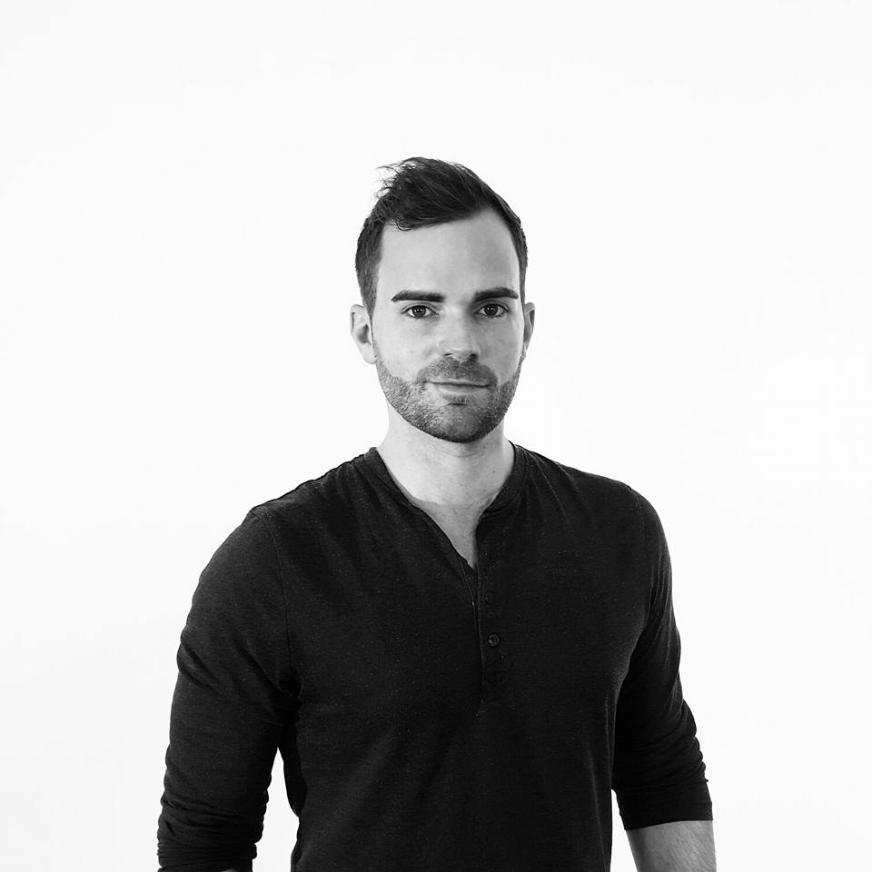

foss-north is an free / open source conference covering both software and hardware from the technical perspective. Hosted in Gothenburg between Copenhagen, Oslo and Stockholm with an international airport, we provide a meeting place for the Nordic foss communities and will bring together great speakers with a great audience.
foss-north will provide a full day of interesting speakers. We are happy to announce that we have confirmed the following speakers.

Lewis Horne
Lewis is a passionate futurist and champion for disruption through openness, collaboration and challenging established truths. He advocates radical transparency for harmonising economic and societal progress, and believes this position provides both product and market advantages. Lewis is an awarded serial entrepreneur with a rich history of disruptive innovation, holding a Msc Entrepreneurship and a Bsc International Business. He is also the founder and CEO of Uniti, the open source electric city car

Adam Dunkels
Adam Dunkels, PhD, is the CEO and co-founder of Thingsquare, the creator of the Contiki open source OS, and an Internet of Things pioneer. The MIT Technology Review named him one of the top 35 innovators in the world for having created the minimal wireless networking protocols that allow almost any device to communicate over the Internet. Most of today's Internet of Things products are powered by software he created.
He is a recipient of the ACM SIGOPS EuroSys Roger Needham award and the ERCIM Cor Baayen award. He is a co-founder of the IPSO Alliance together with a group of major IoT industry vendors. He has authored and co-authored over 80 scientific papers and has served on many top-tier scientific committees.
His book, "Interconnecting Smart Objects with IP - the Next Internet", co-authored with JP Vasseur and with a foreword by Vint Cerf, was published in 2010.
Amy Sanford
Amy Sanford is a consultant interested on preparing technical entrepreneurs for Digitization or the “4th Industrial Revolution” as the World Economic Forum refers to the current and future world of work.
Amy’s experience includes: coaching global industry leaders at Harvard University, pitch judging for entrepreneurs in the Boston and Gothenburg Startup scene, interdisciplinary programming at the Innovation Lab and identifying trends from global forces such as Big Data and Analytics in the post Global Financial Crisis landscape.
Amy is the Gothenburg Pitching Coach for Startup Marketing Sweden.
Please refer to the
schedule for a complete list of speakers. We're in the process of moving this information.
Daniel Stenberg
Everyone, everywhere runs this code all the time
curl and libcurl are solid corner stones in client-side Internet transfers and in particular for HTTP, running on every imaginable operating system and CPU architecture in use today. They empower the internet connected world we live. Started in the late 90s, the project now reaches billions of users and is being used by or serving virtually every human being in our connected society. Daniel tells the tale of how this started, how it works and why it never gets done. And who really runs the hacking ring.
Alexandra Leisse
Death by a thousand paper cuts – the user experience of complexity
All non-trivial software inevitably grows in complexity over time. Regardless of best intentions, with continuous releases of new functionality, design debt threatens to cripple our applications: they become confusing and increasingly hard to understand and use.
Alexandra shares stories from her design work on complex interfaces that taught her how to make sense of almost any mess.
Alexandra spent 10 years living big drama on opera stages before making her way into KDE and launching her tech career as community manager for Qt in Oslo. She is the founder and co-organiser of the Rails Girls chapter in Oslo, and a proud Web Rebel. Currently, she moves sticky notes for
Ardoq.
Alessando Rubini
Time in Software and Hardware
How time is handled in the Linux kernel and in the White Rabbit network at CERN.
The presentation shows the smart approach to timing in Linux and how similar ideas drive hardware synchronization within I/O devices to better than 1ns worst-case among thousands of systems spread over tens of kilometres at CERN.
Alessandro Rubini installed Linux 0.99.14 soon after getting his degree as electronic engineer. He then received a Ph.D. in computer science at the University of Pavia despite his aversion toward modern technology. He left the University after getting his Ph.D. because he didn't want to write articles. He now works as a freelance writing device drivers and, um...articles. He used to be a young hacker before his babies were born; he's now an old advocate of Free Software who developed a bias for non-PC computer platforms.
foss-north 2016 will be hosted at Lindholmen, Gothenburg on May 26.
We plan a full day from 9:00 - 17:00.
Get your tickets at
eventbrite. The tickets include coffee, light snacks and lunch.
A limited number of early bird tickets are available for 250 SEK. The full price tickets are 350 SEK.
We would like to thank our sponsors who help us make this possible.
foss-north will only be great if we have the best audience, the best speakers and the best sponsors, so help
Spread the Word, answer our
Call for Papers and help promote our
Call for Sponsors.